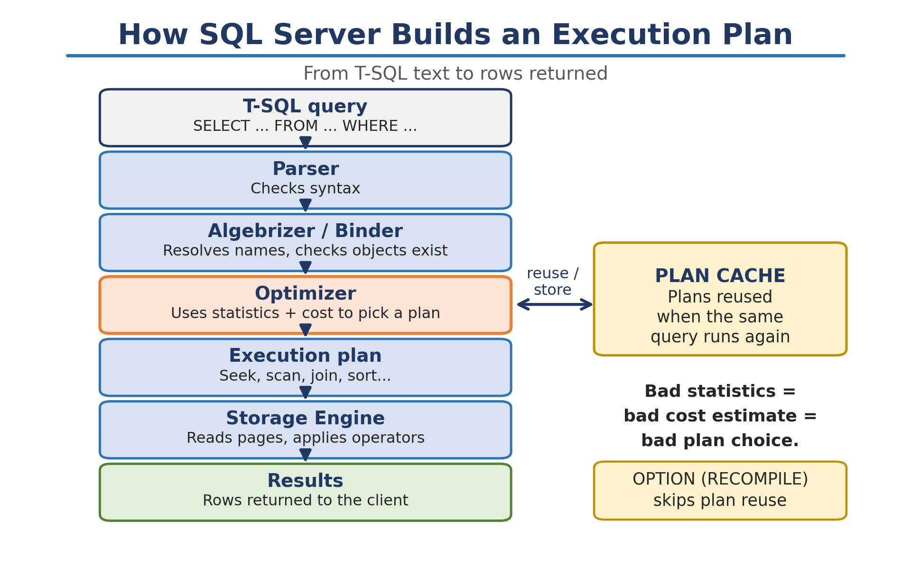
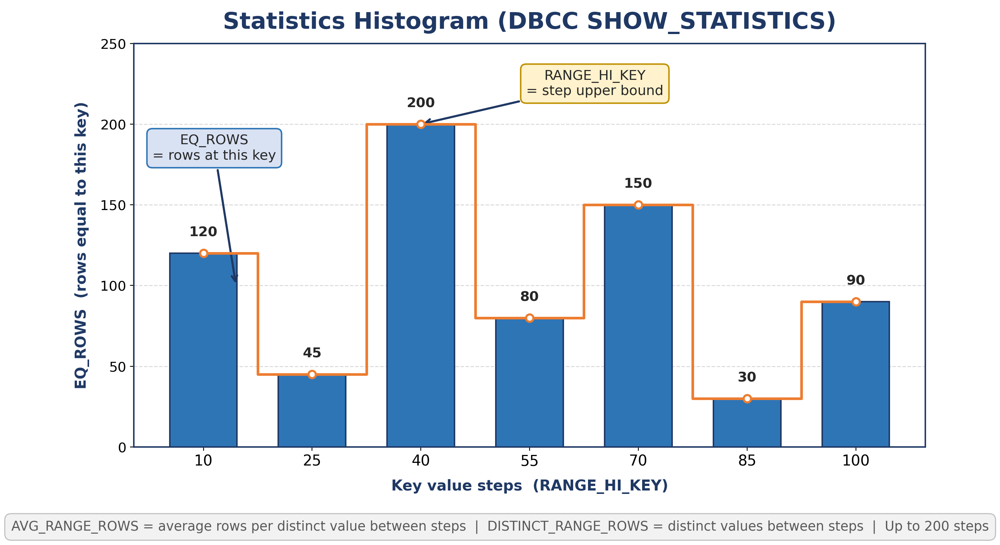

Chapter 8: Execution Plans, Statistics & Cardinality Estimation
The optimizer chooses a plan from statistics, and the execution plan shows that choice step by step. This chapter explains how to capture and read plans, what the common operators and warnings mean, and how statistics describe data distribution. It ends with the plan cache and the first look at parameter sniffing, which explains why the same query can get very different plans.
In this chapter:
Key learning: Good plans come from accurate row estimates, and accurate estimates come from current statistics that reflect the real data distribution. Reading plans means comparing estimated and actual rows, finding the expensive operators, and fixing the underlying cause rather than forcing a plan.
Q77. What is the difference between an estimated and an actual execution plan, and how do you capture each?
Answer: An estimated plan is produced by the optimizer without running the query, using statistics to predict row counts and costs. It answers what plan SQL Server would choose and is safe to capture for expensive or data-changing statements, but its row counts are only predictions.
An actual plan is captured while the query runs, so it includes the real row counts, actual executions, runtime warnings, spills, and elapsed time alongside the estimates. Comparing estimated and actual rows in an actual plan is the fastest way to spot stale statistics or a bad cardinality estimate.
In SQL Server Management Studio, use Display Estimated Execution Plan for the estimate and Include Actual Execution Plan for the actual plan. In T-SQL, use SHOWPLAN_XML for an estimate without execution, or STATISTICS PROFILE and STATISTICS XML for an actual plan. Query Store and Extended Events can also capture plans from production workloads without running the query by hand.
SET SHOWPLAN_XML ON;
GO
SELECT OrderID, TotalAmount
FROM dbo.Orders
WHERE CustomerID = 101;
GO
SET SHOWPLAN_XML OFF;
GO
SET STATISTICS PROFILE ON;
SELECT OrderID, TotalAmount
FROM dbo.Orders
WHERE CustomerID = 101;
SET STATISTICS PROFILE OFF;Key learning: An estimated plan predicts a plan without running the query, while an actual plan runs the query and shows real row counts that reveal bad estimates.

Q78. How do you read an execution plan: right to left, top to bottom, and cost percentages?
Answer: Read a plan in the order data flows, which is right to left, and within a branch, top to bottom. The rightmost operators run first and feed rows leftward toward the final SELECT operator, so start at the right and follow the arrows. Arrow thickness reflects row count: a thick arrow means many rows are flowing, which is often where time and memory go.
Each operator shows its estimated cost as a percentage of the total batch cost, and the operator properties show estimated rows, actual rows in an actual plan, executions, and warnings. Focus first on the highest-cost operators, the largest gaps between estimated and actual rows, and any warnings, rather than reading every operator in order.
Cost percentages are optimizer estimates, not measured time, so they guide attention but do not prove where time was spent. Always confirm with actual rows, logical reads, and wait information before changing an index or rewriting a query based only on a percentage.
SELECT c.LastName, COUNT(*) AS OrderCount, SUM(o.TotalAmount) AS TotalSpent
FROM dbo.Customers AS c
INNER JOIN dbo.Orders AS o
ON o.CustomerID = c.CustomerID
WHERE o.OrderDate >= '2026-01-01'
GROUP BY c.LastName
ORDER BY TotalSpent DESC;Key learning: Read plans in data-flow order from right to left, follow thick arrows and high-cost operators first, and treat cost percentages as estimates to confirm with actual rows and reads.
Q79. What do the common execution plan operators mean: Index Seek, Index Scan, Table Scan, Key Lookup, Nested Loops, Hash Match, Merge Join, Sort, and Spool?
Answer: Index Seek navigates a B-tree to specific rows, Index Scan reads the whole index leaf level, Table Scan reads every page of a heap, and Key Lookup fetches missing columns from the clustered index after a nonclustered seek. Seek is best for selective work, scans suit large reads, and lookups are cheap in small numbers and costly in large numbers.
For joins, Nested Loops takes each row from the outer input and seeks into the inner input, which suits a small outer set with an indexed inner table. Hash Match builds a hash table from the smaller build input and probes it with the larger input, which suits large, unsorted sets but needs memory and can spill. Merge Join merges two sorted inputs and suits large sets that are already sorted or can be sorted cheaply.
Sort orders rows for ORDER BY, GROUP BY, or Merge Join and is a blocking operator that must consume all input before returning rows, using a memory grant that can spill to tempdb. Spool stores rows temporarily, for example to protect against Halloween reads, to reuse a subquery result, or to hold rows for a later step, and an Eager Spool blocks while a Lazy Spool streams rows as needed.
SELECT c.LastName, o.OrderID, o.TotalAmount
FROM dbo.Customers AS c
INNER JOIN dbo.Orders AS o
ON o.CustomerID = c.CustomerID
WHERE c.LastName = 'Patel'
ORDER BY o.OrderDate;Key learning: Seek, scan, and lookup operators describe how rows are found, Nested Loops, Hash Match, and Merge Join describe how sets are joined, and Sort and Spool describe ordering and temporary storage steps.
Q80. What warnings can appear in execution plans, and what do they mean?
Answer: A missing index warning appears as green text suggesting an index that would help the query, with an estimated impact. Treat it as a hint to investigate, not an instruction: consolidate it with existing indexes, check the columns and impact, and test before creating anything.
An implicit conversion warning means a CONVERT_IMPLICIT expression is applied to a column, which usually blocks a seek and forces a scan. Fix it by matching the parameter or literal type to the column type. A spill warning means a Sort or Hash operator ran out of its memory grant and spilled rows to tempdb, which is often caused by underestimated row counts from stale statistics or by a large sort.
A missing join predicate warning, shown as No Join Predicate, means a join has no ON condition linking the tables, producing a Cartesian product. Other useful warnings include columns with no statistics, residual I/O from a predicate applied after a seek, and memory grant warnings. In every case, fix the cause, such as the join, the data types, or the statistics, rather than hiding the warning.
SELECT o.OrderID, c.LastName
FROM dbo.Orders AS o
INNER JOIN dbo.Customers AS c
ON c.Email = N'anita@example.com'
WHERE o.CustomerID = 101;Key learning: Plan warnings point to the underlying cause of a poor plan, such as a missing index, a type conversion, a memory spill, or a missing join condition, and each warning should be fixed at its cause.
Q81. What are statistics, and how does the optimizer use them?
Answer: Statistics are metadata describing the distribution of values in a column or set of columns: how many rows exist, how many distinct values there are, how values are spread, and how many rows were sampled. SQL Server creates statistics automatically for indexes, and can auto-create single-column statistics for filter and join columns that have no index.
The optimizer uses statistics to estimate how many rows each step will return, which is called cardinality estimation. Those estimates decide whether to seek or scan, which join type and join order to use, how much memory to grant, and whether to run steps in parallel. Accurate estimates usually produce good plans, while wrong estimates can produce scans, spills, and slow joins.
Each statistics object has a header with row counts and sampling information, a histogram describing value distribution in up to 200 steps, and a density vector describing uniqueness. Statistics go stale as data changes, so keeping them current is one of the highest-value maintenance tasks for query performance.
CREATE STATISTICS ST_Orders_OrderDate
ON dbo.Orders (OrderDate);
DBCC SHOW_STATISTICS ('dbo.Orders', 'ST_Orders_OrderDate') WITH STAT_HEADER;
SELECT name, auto_created, user_created, is_temporary
FROM sys.stats
WHERE object_id = OBJECT_ID('dbo.Orders');Key learning: Statistics describe how data values are distributed so the optimizer can estimate row counts and choose seeks, joins, and memory grants that fit the real data.
Q82. What is a statistics histogram, and what do RANGE_HI_KEY, RANGE_ROWS, EQ_ROWS, DISTINCT_RANGE_ROWS, and AVG_RANGE_ROWS mean?
Answer: The histogram is the second result set from DBCC SHOW_STATISTICS, with up to 200 steps that summarize the distribution of values in the first column of the statistics object. Each step covers a range of values ending at RANGE_HI_KEY, and the optimizer uses the step counts to estimate rows for equality and range predicates.
The columns mean the following:
For an equality predicate on a RANGE_HI_KEY value, the optimizer uses EQ_ROWS directly. For a value inside a range, it uses AVG_RANGE_ROWS, and for a range predicate it adds up the steps covered, interpolating within a partial step. Values above the highest RANGE_HI_KEY, such as new ascending keys, have no histogram step, which is why the ascending key problem causes underestimates.
DBCC SHOW_STATISTICS ('dbo.Orders', 'IX_Orders_CustomerID') WITH HISTOGRAM;
SELECT CustomerID, COUNT(*) AS RowCount
FROM dbo.Orders
GROUP BY CustomerID
ORDER BY CustomerID;Key learning: The histogram divides column values into steps ending at each upper boundary key, with counts for equal rows and range rows that the optimizer uses to estimate equality and range predicates.

Q83. What are incremental statistics, and when do they help on partitioned tables?
Answer: On a partitioned table, a normal statistics update scans the whole table, even when only the newest partition changed. Incremental statistics, available since SQL Server 2014 for partitioned tables, store one histogram per partition and let you update the statistics for a single partition instead. That matters on very large tables, where only the current partition receives new rows and a full scan for statistics would take too long to run often.
To use them, create the statistics with STATISTICS_INCREMENTAL = ON, or enable it on an index. Then update one partition with UPDATE STATISTICS ... WITH RESAMPLE ON PARTITIONS(n). The per-partition histograms are merged into a combined view the optimizer uses. Check whether a statistics object is incremental with sys.stats.is_incremental. If the table is not partitioned, incremental statistics do nothing, and for small tables a full update is already cheap enough.
-- Create an index with incremental statistics on a partitioned table
CREATE NONCLUSTERED INDEX IX_Orders_CustomerID
ON dbo.Orders (CustomerID)
WITH (STATISTICS_INCREMENTAL = ON);
-- Update statistics for only the newest partition (partition 12)
UPDATE STATISTICS dbo.Orders IX_Orders_CustomerID
WITH RESAMPLE ON PARTITIONS(12);
-- Check which statistics objects are incremental
SELECT name, is_incremental
FROM sys.stats
WHERE object_id = OBJECT_ID('dbo.Orders');Key learning: Incremental statistics store one histogram per partition so you can refresh statistics for only the changed partition instead of scanning a very large table.
Q84. How do auto-create and auto-update statistics work, and how do thresholds behave on large tables?
Answer: AUTO_CREATE_STATISTICS lets SQL Server create single-column statistics automatically when a query filters or joins on a column with no index and no statistics object. Without it, the optimizer would have to guess row counts for those columns, so it is normally left on.
AUTO_UPDATE_STATISTICS refreshes statistics automatically when enough rows have changed. The classic threshold is 500 rows plus 20 percent of the table rows, which works for small tables but is far too high for a table with hundreds of millions of rows, where 20 percent may never be reached between maintenance windows. Updates happen synchronously by default, so the first query after the threshold may wait, unless AUTO_UPDATE_STATISTICS_ASYNC is on and the query proceeds with the old statistics while the update runs in the background.
Since SQL Server 2016 the threshold is dynamic by default for databases at the current compatibility level: the percentage of changed rows that triggers an update falls as the table grows, so large tables refresh after a much smaller share of changes. Trace flag 2371 was the old way to enable that dynamic threshold on SQL Server 2014 and earlier, and it is not needed on modern versions. Even with auto-update on, very volatile or skewed tables often need scheduled manual updates.
ALTER DATABASE SalesDB SET AUTO_CREATE_STATISTICS ON;
ALTER DATABASE SalesDB SET AUTO_UPDATE_STATISTICS ON;
ALTER DATABASE SalesDB SET AUTO_UPDATE_STATISTICS_ASYNC ON;
SELECT name, is_auto_create_stats_on, is_auto_update_stats_on, is_auto_update_stats_async_on
FROM sys.databases
WHERE name = 'SalesDB';
-- Manual refresh for a volatile table, outside the auto-update threshold
UPDATE STATISTICS dbo.Orders WITH FULLSCAN;Key learning: Auto-create builds statistics for unindexed filter columns and auto-update refreshes them after enough changes, with a dynamic threshold on modern versions so large tables refresh sooner than the old fixed percentage would allow.
Q85. What is the cardinality estimator, and how do the legacy and new estimators and CE versions differ?
Answer: The cardinality estimator, or CE, is the part of the optimizer that predicts how many rows each operation will return. Every plan choice depends on those predictions, so a CE change can improve some queries and regress others even when the data and indexes stay the same.
The legacy CE, used through SQL Server 2012, makes assumptions such as independence between predicates and simple handling of ascending keys. The new CE, introduced in SQL Server 2014, revised several assumptions, including correlation between predicates, handling of ascending keys, and estimates for joins and distinct values, and it generally produces better plans for modern workloads.
CE versions follow database compatibility level: 70 is the legacy CE, 120 is SQL Server 2014, 130 is 2016, 140 is 2017, 150 is 2019, and 160 is 2022, with later versions refining the new CE. After an upgrade, test the workload under the new level, and use a query hint or database scoped configuration to fall back to the legacy CE for individual regressed queries instead of holding the whole database back.
ALTER DATABASE SalesDB SET COMPATIBILITY_LEVEL = 160;
SELECT OrderID, TotalAmount
FROM dbo.Orders
WHERE CustomerID = 101 AND OrderDate >= '2026-01-01'
OPTION (USE HINT ('FORCE_LEGACY_CARDINALITY_ESTIMATION'));
ALTER DATABASE SCOPED CONFIGURATION SET LEGACY_CARDINALITY_ESTIMATION = ON;Key learning: The cardinality estimator predicts row counts for the optimizer, and the new estimator from SQL Server 2014 onward revises legacy assumptions by compatibility level, with a fallback hint available for individual regressed queries.
Q86. What are the symptoms of stale or inaccurate statistics?
Answer: The clearest symptom is a large gap between estimated and actual rows in an actual execution plan: the optimizer expected a few rows and got thousands, or expected thousands and got a few. That gap then causes the wrong operator choices, such as a seek with many lookups when a scan would be cheaper, or a scan when a seek would be fast.
Other symptoms include sudden plan changes after a bulk load or a large delete, Sort and Hash spills to tempdb from memory grants that were too small, excessive memory grants that waste memory and slow concurrency, and a join type or join order that fits the estimated shape but not the real data. The ascending key problem is a classic case: newly inserted keys beyond the histogram maximum are estimated as one row, so a query for recent data gets a plan built for almost no rows.
Diagnose by checking the last update date and the sampled row count for the relevant statistics, and by comparing the statistics row count with the actual table row count. If the statistics are old or sampled from a small fraction of a skewed table, update them and retest before changing indexes or hints.
SELECT
s.name AS stats_name,
STATS_DATE(s.object_id, s.stats_id) AS last_updated,
sp.last_updated,
sp.rows,
sp.rows_sampled,
sp.modification_counter
FROM sys.stats AS s
CROSS APPLY sys.dm_db_stats_properties(s.object_id, s.stats_id) AS sp
WHERE s.object_id = OBJECT_ID('dbo.Orders');Key learning: Stale statistics show up as estimated rows far from actual rows, leading to wrong seeks, scans, joins, spills, and memory grants, especially after bulk changes or for new ascending keys.
Q87. What is the difference between UPDATE STATISTICS with full scan and sampling, and what does sp_updatestats do?
Answer: UPDATE STATISTICS rebuilds the histogram, density vector, and header for a statistics object from a scan of the table or index. WITH FULLSCAN reads every row, giving the most accurate statistics, but it is the slowest and most resource-heavy option, best for critical, skewed, or moderately sized tables. WITH SAMPLE reads a percentage or a row count, which is faster and often accurate enough for large, evenly distributed tables, while WITH RESAMPLE reuses the previous sampling rate.
The sampling choice is a trade-off: a small sample on a skewed table can miss rare values and produce a poor histogram, while a full scan on a huge table may not fit the maintenance window. Rebuilding an index also refreshes its statistics with the equivalent of a full scan, but reorganizing an index does not update statistics.
The stored procedure sp_updatestats updates all statistics in the current database that need updating, using default sampling, and is a convenient catch-all after bulk work. It gives less control than targeted UPDATE STATISTICS statements, so most maintenance strategies update the important tables explicitly and use sp_updatestats only as a safety net.
UPDATE STATISTICS dbo.Orders WITH FULLSCAN;
UPDATE STATISTICS dbo.Orders IX_Orders_CustomerID WITH SAMPLE 20 PERCENT;
UPDATE STATISTICS dbo.Orders WITH RESAMPLE;
EXEC sp_updatestats;Key learning: Full scan statistics are the most accurate but the slowest, sampling trades some accuracy for speed, and sp_updatestats refreshes all outdated statistics in a database with default sampling.
Q88. What is the plan cache, and how do sys.dm_exec_query_plan, plan reuse, and adhoc versus prepared plans work?
Answer: The plan cache stores compiled execution plans in memory so SQL Server can reuse a plan instead of compiling the same query again. Compilation costs CPU and time, so reuse matters most for frequently run queries, and the cache is managed by age and memory pressure, with unused plans evicted first.
Adhoc plans come from literal SQL text sent without parameters, so each different literal value produces a different cache entry and the cache can fill with near-duplicate plans. Prepared and parameterized plans, from stored procedures, sp_executesql with parameters, or auto-parameterization, reuse one plan for many parameter values and keep the cache small. The optimize for ad hoc workloads setting can reduce the waste by caching only a stub on first use.
The view sys.dm_exec_query_plan returns the cached plan XML for a plan handle, and it is normally joined to sys.dm_exec_cached_plans for cache metadata and sys.dm_exec_sql_text for the query text. Use these views to find the most executed or most expensive cached plans, to check whether a query is reusing a plan or compiling a new one each time, and to spot adhoc cache bloat.
SELECT TOP 20
cp.objtype,
cp.usecounts,
cp.size_in_bytes,
st.text,
qp.query_plan
FROM sys.dm_exec_cached_plans AS cp
CROSS APPLY sys.dm_exec_sql_text(cp.plan_handle) AS st
CROSS APPLY sys.dm_exec_query_plan(cp.plan_handle) AS qp
WHERE st.text LIKE '%dbo.Orders%'
ORDER BY cp.usecounts DESC;Key learning: The plan cache stores compiled plans for reuse, parameterized and procedure plans reuse well, and adhoc literal queries can bloat the cache with near-duplicate plans.
Q89. What is parameter sniffing, and why do plans vary by parameter value?
Answer: Parameter sniffing is the optimizer behavior of looking at, or sniffing, the actual parameter values supplied on the first compilation of a stored procedure or parameterized query, and building a plan that is optimal for those values. That plan is then cached and reused for later executions with different parameter values.
Plans vary by parameter because the best plan depends on how many rows a value matches. A customer with five orders is best served by a seek plus key lookups, while a customer with fifty thousand orders is best served by a scan. If the first execution sniffed the selective value, later executions for the unselective value reuse the seek plan and run thousands of lookups, and the reverse causes scans for selective values.
This is why the same procedure can be fast for one parameter and slow for another, and why the problem can appear or disappear when a plan is recompiled or evicted. Common responses include OPTION (RECOMPILE), OPTIMIZE FOR a typical value, local variables that hide the value, and branching logic for skewed values, each with its own trade-offs covered in later chapters.
CREATE OR ALTER PROCEDURE dbo.GetOrdersByCustomer
@CustomerID INT
AS
BEGIN
SELECT OrderID, OrderDate, TotalAmount
FROM dbo.Orders
WHERE CustomerID = @CustomerID;
END;
GO
EXEC dbo.GetOrdersByCustomer @CustomerID = 101;
EXEC dbo.GetOrdersByCustomer @CustomerID = 207;Key learning: Parameter sniffing builds a cached plan that is optimal for the first parameter values compiled, so later values with very different selectivity can reuse a plan that fits them poorly.
Q90. What does OPTION (RECOMPILE) do, and when should you use it?
Answer: OPTION (RECOMPILE) tells SQL Server to recompile the statement on every execution, using the current parameter values, current statistics, and current data distribution, and then to discard the plan instead of caching it. Because each execution gets a plan built for its own values, it removes parameter sniffing problems for that statement and lets the optimizer simplify branches for optional search parameters.
Use it for statements with skewed data where the right plan depends strongly on the parameter, for catch-all search queries with optional filters, for infrequently run reports where compile cost is trivial compared to run time, and when statistics change rapidly. It is a statement-level hint, so it affects only the query it is attached to, unlike procedure-level recompilation.
Avoid it on high-frequency transactional queries, because recompiling every execution burns CPU and can hurt throughput more than a slightly imperfect cached plan. Also avoid it as a blanket fix: if every query needs recompilation, the underlying problem is usually statistics, indexing, or a design that needs a targeted solution instead.
SELECT OrderID, OrderDate, TotalAmount
FROM dbo.Orders
WHERE CustomerID = 101
OPTION (RECOMPILE);
CREATE OR ALTER PROCEDURE dbo.SearchOrders
@CustomerID INT = NULL,
@Status VARCHAR(20) = NULL
AS
BEGIN
SELECT OrderID, CustomerID, OrderDate, Status, TotalAmount
FROM dbo.Orders
WHERE (@CustomerID IS NULL OR CustomerID = @CustomerID)
AND (@Status IS NULL OR Status = @Status)
OPTION (RECOMPILE);
END;
GOKey learning: OPTION (RECOMPILE) builds a fresh plan for each execution using current values and statistics, which suits skewed and optional-filter queries but costs too much CPU for high-frequency queries.
QueryLab — Self-Hosted SQL Performance Workbench
EXPLAIN visualizer · Index advisor · Slow query dashboard · SQL Server